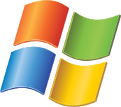

Основные задачи и функции операционных систем
Загрузка программ в оперативную память и их выполнение.
Управление аппаратными компонентами, такие как: процессор, память, устройства ввода-вывода.
Предоставление интерфейса для работы с файловой системы, проще говоря, файлами, папками, с которыми мы привыкли работать.
Операционная система контролирует доступ к ресурсам и данным, предотвращая несанкционированный доступ программ к защищенным данным или данным других программ, то есть обеспечение безопасности.
Десктопные ОС
Windows 10,Linux
Windows 10

Windows — это операционная система, сделанная корпорацией Microsoft (Майкрософт). Операционная система (ОС) — это главная программа, которая запускается при включении компьютера. Она позволяет пользователям компьютера работать с файлами, пользоваться Интернетом и запускать в окошках другие программы, игры, фильмы, музыку. Windows переводится как "окна". Подробнее о Windows
Linux

Операционная система — это комплекс программ, предназначенных для управления ресурсами компьютера и организации взаимодействия с пользователем.